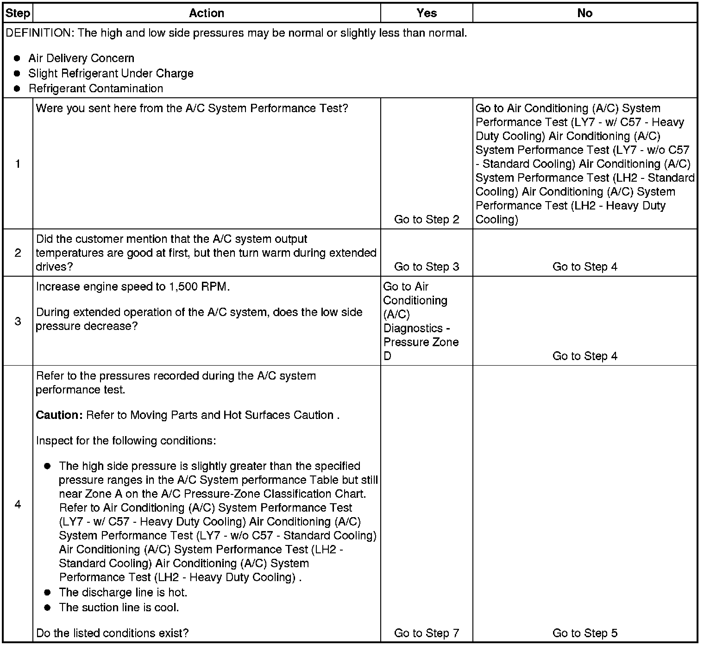
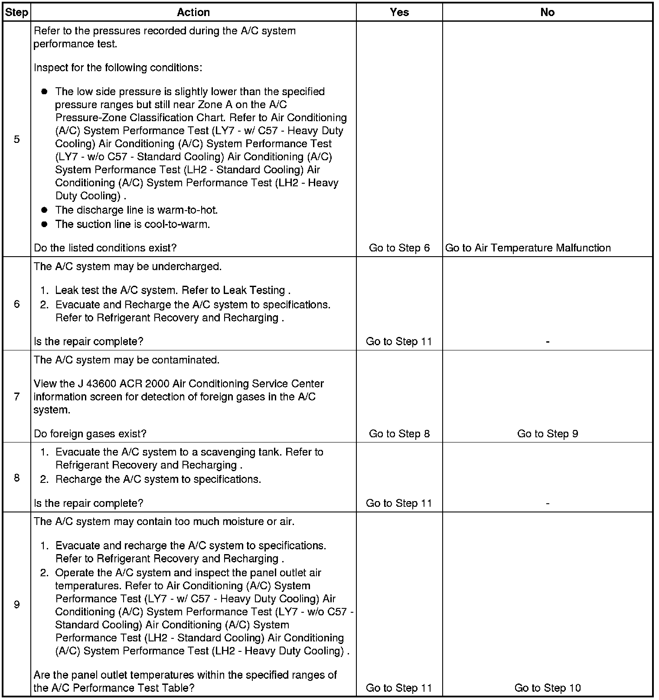
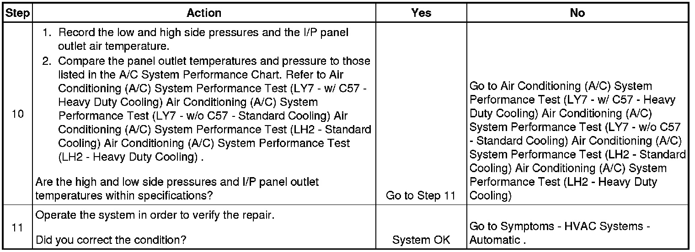

Operation CHARM
: Car repair manuals for everyone.
Home
>>
Cadillac
>>
2008
>>
SRX AWD V8-4.6L
>>
Repair and Diagnosis
>>
Heating and Air Conditioning
>>
Testing and Inspection
>>
Component Tests and General Diagnostics
>>
Air Conditioning (A/C) Diagnostics - Pressure Zone A
Air Conditioning (A/C) Diagnostics - Pressure Zone A
Air Conditioning (A/C) Diagnostics - Pressure Zone A


